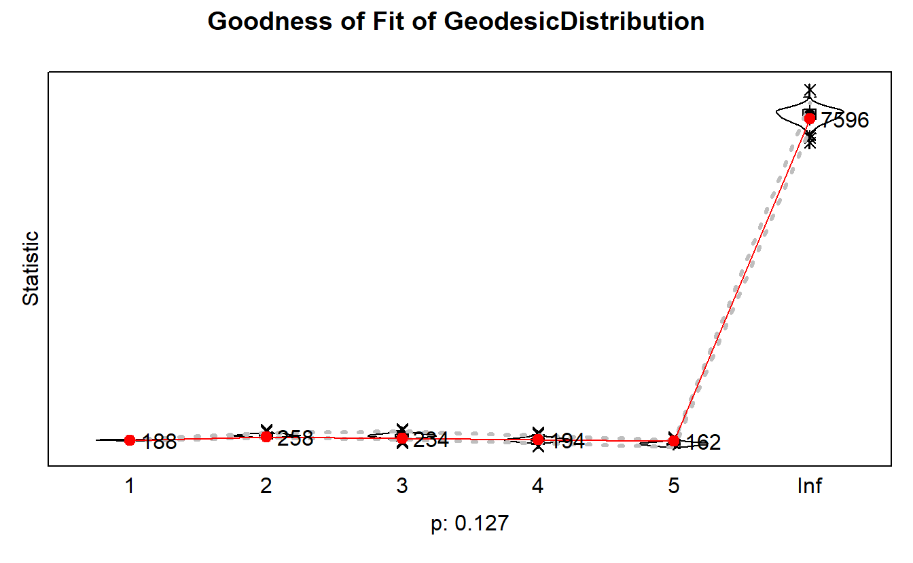

16 Data and Setup for SAOMs in RSiena
16.1 Load and Detach Libraries
First detach sna library; it might conflict with some of the libraries for SAOMs.
detach(package:sna, unload=TRUE)Next, let’s load libraries for this exercise (you will likely have to install these first). The main package for SAOMs is RSiena.
library(RSiena)
library(snow) # Helps with computation.
library(rlecuyer) # This package's main purpose is to enable the use of this random number generator in parallel R applications.
library(xtable) # Coerce data to LaTeX and HTML tables.
library(car) # (https://www.rdocumentation.org/packages/car/versions/3.0-5)16.2 Import and Format Data
We will now turn to our longitudinal data for SAOMs. Because we have actors who left the network at various times, we have to employ “structural zeros.” We load files the files for those actors who cannot form ties at particular times points and then we multiple by 10, which is the value that indicates such actors. Note the first one is empty - no ties.
st0s1525.mat <- as.matrix(read.paj("data/Anabaptists67-1525S0s.net"),
directed = FALSE) * 10
st0s1530.mat <- as.matrix(read.paj("data/Anabaptists67-1530S0s.net"),
directed = FALSE) * 10
st0s1535.mat <- as.matrix(read.paj("data/Anabaptists67-1535S0s.net"),
directed = FALSE) * 10
st0s1540.mat <- as.matrix(read.paj("data/Anabaptists67-1540S0s.net"),
directed = FALSE) * 10
st0s1545.mat <- as.matrix(read.paj("data/Anabaptists67-1545S0s.net"),
directed = FALSE) * 10Next, load actual networks (note that they are the same size even though size actually changes).
anab1525.mat <- as.matrix(read.paj("data/UnionGraph-1525.net"),
directed = FALSE)
anab1530.mat <- as.matrix(read.paj("data/UnionGraph-1530.net"),
directed = FALSE)
anab1535.mat <- as.matrix(read.paj("data/UnionGraph-1535.net"),
directed = FALSE)
anab1540.mat <- as.matrix(read.paj("data/UnionGraph-1540.net"),
directed = FALSE)
anab1545.mat <- as.matrix(read.paj("data/UnionGraph-1545.net"),
directed = FALSE)The next step is to add the two networks together representing each time slice.
t1525.mat <- anab1525.mat
t1530.mat <- anab1530.mat + st0s1530.mat
t1535.mat <- anab1535.mat + st0s1535.mat
t1540.mat <- anab1540.mat + st0s1540.mat
t1545.mat <- anab1545.mat + st0s1545.matYou can check them out to make sure there are only 0’s, 1’s, and 10’s (Note: Output not shown here).
table(t1525.mat)
table(t1530.mat)
table(t1535.mat)
table(t1540.mat)
table(t1545.mat)Bring in the attributes and establish them as constant covariates (i.e., unchanging attributes).
baptism <- coCovar(attributes[, 1])
violent <- coCovar(attributes[, 2])
munster <- coCovar(attributes[, 3])
apocalyptic <- coCovar(attributes[, 4])
melchorite <- coCovar(attributes[, 6])16.3 Structural Model
We will begin with a simple model. We need to set dependent variable for both a three and a four period SAOM.
anab03.net <- sienaNet(netarray = array(
c(t1530.mat, t1535.mat, t1540.mat),
# Determine the dimensions of the array
dim = c(67, 67, 3)
))
anab04.net <- sienaNet(netarray = array(
c(t1525.mat, t1530.mat, t1535.mat, t1540.mat),
dim = c(67, 67, 4)
))We can use the sienaDataCreate() function to define what network(s) we are going to analyze. The getEffects() function will create a list of all potential effects (i.e., structural configurations) in our dependent variable (i.e, network).
mydata03 <- sienaDataCreate(anab03.net)
myeff03 <- getEffects(mydata03)mydata04 <- sienaDataCreate(anab04.net)
myeff04 <- getEffects(mydata04)Use the effectsDocumentation() function to see what effects are available (should be an HTML in folder) for your models.
effectsDocumentation(myeff03)
effectsDocumentation(myeff04)Now let’s build out which structural effects we will include for each model, starting with the three wave model followed by the four wave model.
myeff03 <- includeEffects(myeff03,
transTriads,
gwesp,
density,
balance,
isolateNet) effectName include fix test initialValue parm
1 degree (density) TRUE FALSE FALSE -1.3701 0
2 transitive triads TRUE FALSE FALSE 0.0000 0
3 balance TRUE FALSE FALSE 0.0000 0
4 GWESP (#) TRUE FALSE FALSE 0.0000 69
5 network-isolate TRUE FALSE FALSE 0.0000 0 Now, start building the four wave effects.
myeff04 <- includeEffects(myeff04,
transTriads,
gwesp,
density,
balance,
isolateNet) effectName include fix test initialValue parm
1 degree (density) TRUE FALSE FALSE -1.69964 0
2 transitive triads TRUE FALSE FALSE 0.00000 0
3 balance TRUE FALSE FALSE 0.00000 0
4 GWESP (#) TRUE FALSE FALSE 0.00000 69
5 network-isolate TRUE FALSE FALSE 0.00000 0 Let’s first estimate the three period model. The sienaModelCreate() function creates the model object and siena07() estimates parameters. Note we have to include themodelType parameter because we are working with undirected data. The type we’ve selected here is called the “unilateral initiative and reciprocal confirmation” option. For more information on your options, see pg. 53 of the manual (Ripley et. al., 2020).
mymodel03 <- sienaModelCreate(useStdInits = FALSE,
projname = 'anab03a',
modelType = c(anab03.net = 3))
ans03 <- siena07(mymodel03,
data = mydata03,
effects = myeff03,
#Do you want to turn off the "pop up" box showing the package's
# simulation outputs?
batch = FALSE,
# Do you want to see detailed information about steps taken by
# the algorithm?
verbose = FALSE)
print01Report(mydata03, modelname = 'TrialOutput03a')
ans03Estimates, standard errors and convergence t-ratios
Estimate Standard Convergence
Error t-ratio
Rate parameters:
0.1 Rate parameter period 1 0.4434 ( 0.1088 )
0.2 Rate parameter period 2 0.1078 ( 0.0538 )
Other parameters:
1. eval degree (density) 0.1801 ( 2.6139 ) -0.0345
2. eval transitive triads -3.3982 ( 3.0024 ) -0.0143
3. eval balance 0.6616 ( 0.4311 ) -0.0386
4. eval GWESP (69) 5.4771 ( 4.7461 ) -0.0144
5. eval network-isolate 5.4429 ( 4.7736 ) 0.0656
Overall maximum convergence ratio: 0.0863
Model Type:
anab03.net : Initiative model
Total of 2720 iteration steps.Take a look at the estimates and standard errors from before. One way to identify which effects are significant is to divide the estimate by the standard error. The effect is significant when the quotient is at least two times greater than the estimate the effect. For more proximate results you can try using RSiena’s Multipar.RSiena() function to run a Wald-Type test. The numbers in the code reflect the numerical position of each independent variable.
Multipar.RSiena(ans03, 1)Tested effects:
degree (density)
chi-squared = 0.00, d.f. = 1; one-sided Z = 0.07; two-sided p = 0.945. Multipar.RSiena(ans03, 2)Tested effects:
transitive triads
chi-squared = 1.28, d.f. = 1; one-sided Z = -1.13; two-sided p = 0.258. Multipar.RSiena(ans03, 3)Tested effects:
balance
chi-squared = 2.36, d.f. = 1; one-sided Z = 1.53; two-sided p = 0.125. Multipar.RSiena(ans03, 4)Tested effects:
GWESP (69)
chi-squared = 1.33, d.f. = 1; one-sided Z = 1.15; two-sided p = 0.248. Multipar.RSiena(ans03, 5)Tested effects:
network-isolate
chi-squared = 1.30, d.f. = 1; one-sided Z = 1.14; two-sided p = 0.254. We aren’t getting any statistically significant results.
Now let’s estimate a four period model containing structural variables. You’ll see the model does not come close to converging (i.e., overall convergence ratio is above 0.20 and variables are much higher than 0.1), so we will stick with the three period model from here on out.
mymodel04 <- sienaModelCreate(useStdInits = FALSE,
projname = 'anab04a',
modelType = c(anab04.net = 3))
ans04 <- siena07(mymodel04,
data = mydata04,
effects = myeff04,
batch = FALSE,
verbose = FALSE)
ans04a <- siena07(mymodel04,
data = mydata04,
effects = myeff04,
batch = FALSE,
verbose = FALSE,
prevAns = ans04)
ans04a
print01Report(mydata04, modelname = 'TrialOutput04a')Estimates, standard errors and convergence t-ratios
Estimate Standard Convergence
Error t-ratio
Rate parameters:
0.1 Rate parameter period 1 1.3245 ( 0.2000 )
0.2 Rate parameter period 2 0.5268 ( 0.1215 )
0.3 Rate parameter period 3 0.1146 ( 0.0585 )
Other parameters:
1. eval degree (density) 308.8978 ( 431.4367 ) -4.6570
2. eval transitive triads -103.2716 ( 177.2008 ) -0.2199
3. eval balance -0.1437 ( 0.1903 ) -4.1390
4. eval GWESP (69) 206.1166 ( 359.9364 ) -0.7556
5. eval network-isolate 400.2936 ( 114.2510 ) 20.0822
Overall maximum convergence ratio: 22.0509
Model Type:
anab04.net : Initiative model
Total of 2570 iteration steps.16.4 Model with Actor Covariates
Try more complex three period models with actor covariates. First set the dependent variable.
# Dependent variable
anab03.net <- sienaNet(array(
c(t1530.mat, t1535.mat, t1540.mat),
dim = c(67, 67, 3)
))Next, define what data are to be used in the analysis.
mydata03 <- sienaDataCreate(anab03.net,
baptism,
violent,
munster,
apocalyptic,
melchorite)
myeff03 <- getEffects(mydata03)Again, you can see what effects are available for our models.
effectsDocumentation(myeff03)We will now estimate four different models using structure and actor covariates. First, set up your data with the sienaDataCreate function.
mydata03 <- sienaDataCreate(anab03.net,
melchorite,
munster,
baptism,
apocalyptic)Go ahead and include the following variables for “Model 1.” We’ve discussed the structural effects in class and note simX allows us to test for various forms of homophily.
myeff03 <- getEffects(mydata03)
myeff03 <- includeEffects(myeff03,
density,
transTriads,
balance,
gwesp,
isolateNet) effectName include fix test initialValue parm
1 degree (density) TRUE FALSE FALSE -1.3701 0
2 transitive triads TRUE FALSE FALSE 0.0000 0
3 balance TRUE FALSE FALSE 0.0000 0
4 GWESP (#) TRUE FALSE FALSE 0.0000 69
5 network-isolate TRUE FALSE FALSE 0.0000 0 myeff03 <- includeEffects(myeff03, simX, interaction1 = 'melchorite') effectName include fix test initialValue parm
1 melchorite similarity TRUE FALSE FALSE 0 0 myeff03 <- includeEffects(myeff03, simX, interaction1 = 'munster') effectName include fix test initialValue parm
1 munster similarity TRUE FALSE FALSE 0 0 myeff03 <- includeEffects(myeff03, simX, interaction1 = 'apocalyptic') effectName include fix test initialValue parm
1 apocalyptic similarity TRUE FALSE FALSE 0 0 myeff03 <- includeEffects(myeff03, simX, interaction1 = 'baptism') effectName include fix test initialValue parm
1 baptism similarity TRUE FALSE FALSE 0 0 Estimate the first three period model. Remember, the sienaModelCreate() function creates the model object and siena07() estimates parameters. Note we incorporate the prevAns argument to help with convergence. Also, the returnDeps parameter returns simulated networks that we need for GOF procedures. We will compare models based on their “Overall Convergence Ratio” where the lower ratio indicates the better model at this point(any model you compare should have an overall maximum convergence ratio less that 0.2). Your results may differ slightly from ours but should be consistent overall. You can find the overall maximum convergence near the bottom of the output.
# save(mod1, mod1a, mod2, mod3, mod4, file = "data/covariates.rda")
load("data/covariates.rda")mymodel03 <- sienaModelCreate(useStdInits = FALSE,
projname = 'finalanab03a',
modelType = c(anab03.net = 3))
mod1 <- siena07(mymodel03,
data = mydata03,
effects = myeff03,
batch = FALSE,
verbose = FALSE,
returnDeps = TRUE)
mod1Estimates, standard errors and convergence t-ratios
Estimate Standard Convergence
Error t-ratio
Rate parameters:
0.1 Rate parameter period 1 0.3760 ( 0.0862 )
0.2 Rate parameter period 2 0.1045 ( 0.0552 )
Other parameters:
1. eval degree (density) -0.4233 ( 10.1524 ) 0.0184
2. eval transitive triads -6.7655 ( 67.2207 ) 0.0258
3. eval balance 1.2447 ( 11.9207 ) -0.0622
4. eval GWESP (69) 10.8152 ( 107.4708 ) 0.0239
5. eval network-isolate 8.4240 ( 46.2529 ) 0.0157
6. eval baptism similarity -0.1357 ( 3.0212 ) -0.0365
7. eval munster similarity -11.7206 ( 161.9564 ) -0.0082
8. eval apocalyptic similarity 1.9096 ( 4.9892 ) 0.0024
9. eval melchorite similarity 7.9934 ( 141.3219 ) -0.0007
Overall maximum convergence ratio: 0.0934
Model Type:
anab03.net : Initiative model
Total of 2877 iteration steps.Had it not converged, we could have run it again using the prevAns argument to help with convergence.
mod1a <- siena07(mymodel03,
data = mydata03,
effects = myeff03,
batch = FALSE,
verbose = FALSE,
returnDeps = TRUE,
prevAns = ans03)
mod1aWe can use the Multipar.RSiena() function when a model has converged. You can see that none of the configurations are statistically significant.
Multipar.RSiena(mod1, 1)Tested effects:
degree (density)
chi-squared = 0.00, d.f. = 1; one-sided Z = -0.04; two-sided p = 0.967. Multipar.RSiena(mod1, 2)Tested effects:
transitive triads
chi-squared = 0.01, d.f. = 1; one-sided Z = -0.10; two-sided p = 0.92. Multipar.RSiena(mod1, 3)Tested effects:
balance
chi-squared = 0.01, d.f. = 1; one-sided Z = 0.10; two-sided p = 0.917. Multipar.RSiena(mod1, 4)Tested effects:
GWESP (69)
chi-squared = 0.01, d.f. = 1; one-sided Z = 0.10; two-sided p = 0.92. Multipar.RSiena(mod1, 5)Tested effects:
network-isolate
chi-squared = 0.03, d.f. = 1; one-sided Z = 0.18; two-sided p = 0.855. Multipar.RSiena(mod1, 6)Tested effects:
baptism similarity
chi-squared = 0.00, d.f. = 1; one-sided Z = -0.04; two-sided p = 0.964. Multipar.RSiena(mod1, 7)Tested effects:
munster similarity
chi-squared = 0.01, d.f. = 1; one-sided Z = -0.07; two-sided p = 0.942. Multipar.RSiena(mod1, 8)Tested effects:
apocalyptic similarity
chi-squared = 0.15, d.f. = 1; one-sided Z = 0.38; two-sided p = 0.702. Multipar.RSiena(mod1, 9)Tested effects:
melchorite similarity
chi-squared = 0.00, d.f. = 1; one-sided Z = 0.06; two-sided p = 0.955. Let’s now move onto “Model 2.” First use the getEffects() function to see what’s available and then include appropriate effects using includeEffects(). Note we “commented out” a few effects that we attempted to include at first but with no luck. When you’re building these on your own, you’ll notice you often need to use “trial and error” to get to working models.
myeff03 <- getEffects(mydata03)
myeff03 <- includeEffects(myeff03, density) effectName include fix test initialValue parm
1 degree (density) TRUE FALSE FALSE -1.3701 0 myeff03 <- includeEffects(myeff03, transTriads) effectName include fix test initialValue parm
1 transitive triads TRUE FALSE FALSE 0 0 # myeff03 <- includeEffects(myeff03,balance)
# myeff03 <- includeEffects(myeff03,gwesp)
# myeff03 <- includeEffects(myeff03,isolateNet)
myeff03 <- includeEffects(myeff03, simX, interaction1 = 'melchorite') effectName include fix test initialValue parm
1 melchorite similarity TRUE FALSE FALSE 0 0 # myeff03 <- includeEffects(myeff03,simX,interaction1='munster')
myeff03 <- includeEffects(myeff03, simX, interaction1 = 'apocalyptic') effectName include fix test initialValue parm
1 apocalyptic similarity TRUE FALSE FALSE 0 0 myeff03 <- includeEffects(myeff03, simX, interaction1 = 'baptism') effectName include fix test initialValue parm
1 baptism similarity TRUE FALSE FALSE 0 0 Go ahead and estimate the second model. Check out overall maximum convergence ratio.
mymodel03 <- sienaModelCreate(useStdInits = FALSE,
projname = 'finalanab03b',
modelType = c(anab03.net = 3))
mod2 <- siena07(mymodel03,
data = mydata03,
effects = myeff03,
batch = FALSE,
returnDeps = TRUE,
verbose = FALSE)
mod2Estimates, standard errors and convergence t-ratios
Estimate Standard Convergence
Error t-ratio
Rate parameters:
0.1 Rate parameter period 1 0.4654 ( 0.1227 )
0.2 Rate parameter period 2 0.0958 ( 0.0485 )
Other parameters:
1. eval degree (density) -2.2457 ( 0.4788 ) -0.0421
2. eval transitive triads 1.0095 ( 0.3362 ) -0.0035
3. eval baptism similarity 0.7998 ( 0.7075 ) -0.0617
4. eval apocalyptic similarity -0.0733 ( 0.8471 ) 0.0203
5. eval melchorite similarity 1.4321 ( 0.8523 ) -0.0222
Overall maximum convergence ratio: 0.0923
Model Type:
anab03.net : Initiative model
Total of 2460 iteration steps.Here we are successful. The overall maximum convergence ratio looks good and so do the individual ratios.
You can check for which effects are statistically significant. You’ll notice that the value p < 0.01 for transitive triads expresses strong evidence that the network dynamics depends on closure. Again, we don’t interpret density/edges typically.
Multipar.RSiena(mod2, 1)Tested effects:
degree (density)
chi-squared = 22.00, d.f. = 1; one-sided Z = -4.69; two-sided p < 0.001. Multipar.RSiena(mod2, 2)Tested effects:
transitive triads
chi-squared = 9.02, d.f. = 1; one-sided Z = 3.00; two-sided p = 0.003. Multipar.RSiena(mod2, 3)Tested effects:
baptism similarity
chi-squared = 1.28, d.f. = 1; one-sided Z = 1.13; two-sided p = 0.258. Multipar.RSiena(mod2, 4)Tested effects:
apocalyptic similarity
chi-squared = 0.01, d.f. = 1; one-sided Z = -0.09; two-sided p = 0.931. Multipar.RSiena(mod2, 5)Tested effects:
melchorite similarity
chi-squared = 2.82, d.f. = 1; one-sided Z = 1.68; two-sided p = 0.093. Now, let’s build our third model swapping out “melochorite” homophily for “munster” homophily.
myeff03 <- getEffects(mydata03)
myeff03 <- includeEffects(myeff03, density) effectName include fix test initialValue parm
1 degree (density) TRUE FALSE FALSE -1.3701 0 myeff03 <- includeEffects(myeff03, transTriads) effectName include fix test initialValue parm
1 transitive triads TRUE FALSE FALSE 0 0 # myeff03 <- includeEffects(myeff03,balance)
# myeff03 <- includeEffects(myeff03,gwesp)
# myeff03 <- includeEffects(myeff03,isolateNet)
# myeff03 <- includeEffects(myeff03,simX,interaction1='melchorite')
myeff03 <- includeEffects(myeff03, simX, interaction1 = 'munster') effectName include fix test initialValue parm
1 munster similarity TRUE FALSE FALSE 0 0 myeff03 <- includeEffects(myeff03, simX, interaction1 = 'apocalyptic') effectName include fix test initialValue parm
1 apocalyptic similarity TRUE FALSE FALSE 0 0 myeff03 <- includeEffects(myeff03, simX, interaction1 = 'baptism') effectName include fix test initialValue parm
1 baptism similarity TRUE FALSE FALSE 0 0 Go ahead and estimate the model and check out the results. Again, look at the overall maximum convergence ratio.
mymodel03 <- sienaModelCreate(useStdInits = FALSE,
projname = 'finalanab03c',
modelType = c(anab03.net = 3))
mod3 <- siena07(mymodel03,
data = mydata03,
effects = myeff03,
batch = FALSE,
returnDeps = TRUE,
verbose = FALSE)
mod3Estimates, standard errors and convergence t-ratios
Estimate Standard Convergence
Error t-ratio
Rate parameters:
0.1 Rate parameter period 1 0.4074 ( 0.1001 )
0.2 Rate parameter period 2 0.0939 ( 0.0495 )
Other parameters:
1. eval degree (density) -2.3094 ( 0.5540 ) 0.0178
2. eval transitive triads 1.0903 ( 0.3563 ) 0.0382
3. eval baptism similarity 0.8840 ( 0.7685 ) 0.0306
4. eval munster similarity -3.0708 ( 2.5081 ) 0.0205
5. eval apocalyptic similarity 2.3710 ( 1.8754 ) 0.0337
Overall maximum convergence ratio: 0.0558
Model Type:
anab03.net : Initiative model
Total of 2555 iteration steps.Again, you’ll notice that transitive triads is statistically significant (p < 0.01).
Multipar.RSiena(mod3, 1)Tested effects:
degree (density)
chi-squared = 17.38, d.f. = 1; one-sided Z = -4.17; two-sided p < 0.001. Multipar.RSiena(mod3, 2)Tested effects:
transitive triads
chi-squared = 9.36, d.f. = 1; one-sided Z = 3.06; two-sided p = 0.002. Multipar.RSiena(mod3, 3)Tested effects:
baptism similarity
chi-squared = 1.32, d.f. = 1; one-sided Z = 1.15; two-sided p = 0.25. Multipar.RSiena(mod3, 4)Tested effects:
munster similarity
chi-squared = 1.50, d.f. = 1; one-sided Z = -1.22; two-sided p = 0.221. Multipar.RSiena(mod3, 5)Tested effects:
apocalyptic similarity
chi-squared = 1.60, d.f. = 1; one-sided Z = 1.26; two-sided p = 0.206. Now, let’s set up and run the final model.
myeff03 <- getEffects(mydata03)
myeff03 <- includeEffects(myeff03, density) effectName include fix test initialValue parm
1 degree (density) TRUE FALSE FALSE -1.3701 0 myeff03 <- includeEffects(myeff03, transTriads) effectName include fix test initialValue parm
1 transitive triads TRUE FALSE FALSE 0 0 # myeff03 <- includeEffects(myeff03,balance)
# myeff03 <- includeEffects(myeff03,gwesp)
# myeff03 <- includeEffects(myeff03,isolateNet)
# myeff03 <- includeEffects(myeff03,simX,interaction1='melchorite')
myeff03 <- includeEffects(myeff03, simX, interaction1 = 'munster') effectName include fix test initialValue parm
1 munster similarity TRUE FALSE FALSE 0 0 myeff03 <- includeEffects(myeff03, simX, interaction1 = 'apocalyptic') effectName include fix test initialValue parm
1 apocalyptic similarity TRUE FALSE FALSE 0 0 # myeff03 <- includeEffects(myeff03,simX,interaction1='baptism')The overall maximum convergence ratio suggests this is a good model, too.
mymodel03 <- sienaModelCreate(useStdInits = FALSE,
projname = 'finalanab03d',
modelType = c(anab03.net = 3))
mod4 <- siena07(mymodel03,
data = mydata03,
effects = myeff03,
batch = FALSE,
verbose = FALSE,
returnDeps = TRUE)
mod4Estimates, standard errors and convergence t-ratios
Estimate Standard Convergence
Error t-ratio
Rate parameters:
0.1 Rate parameter period 1 0.4047 ( 0.0984 )
0.2 Rate parameter period 2 0.0949 ( 0.0469 )
Other parameters:
1. eval degree (density) -2.2633 ( 0.5614 ) 0.0251
2. eval transitive triads 1.0565 ( 0.3715 ) -0.0302
3. eval munster similarity -3.4282 ( 2.5863 ) -0.0569
4. eval apocalyptic similarity 2.7423 ( 1.9945 ) -0.1150
Overall maximum convergence ratio: 0.1569
Model Type:
anab03.net : Initiative model
Total of 2356 iteration steps.Again, you’ll notice that transitive triads is statistically significant (p < 0.01).
Multipar.RSiena(mod4, 1)Tested effects:
degree (density)
chi-squared = 16.25, d.f. = 1; one-sided Z = -4.03; two-sided p < 0.001. Multipar.RSiena(mod4, 2)Tested effects:
transitive triads
chi-squared = 8.09, d.f. = 1; one-sided Z = 2.84; two-sided p = 0.004. Multipar.RSiena(mod4, 3)Tested effects:
munster similarity
chi-squared = 1.76, d.f. = 1; one-sided Z = -1.33; two-sided p = 0.185. Multipar.RSiena(mod4, 4)Tested effects:
apocalyptic similarity
chi-squared = 1.89, d.f. = 1; one-sided Z = 1.37; two-sided p = 0.169. 16.5 Goodness of Fit (GOF)
We will demonstrate GOF by accounting for degree distribution, triad census, and path distance. These are not the only GOF tests you can (and should) run but are good places to start. In all cases, we want to the p-values to be around or larger than 0.05 (https://www.stats.ox.ac.uk/~snijders/siena/SienaAdvancedUsersWorkshop2018.pdf, see slides 49-63)
Though we have an undirected network, we will use the IndegreeDistribution option. Note this may take awhile.
We will only assess our third model to keep things simple but you will want to assess GOF for all models that have converged and that you plan to interpret in your research. Note that some of you may have gotten lower overall maximum convergence ratios for other models. Continue to use them as a guide but note they can vary at times.
# save(gof1.deg, gof.tc, gof.gd, file = "data/gof.rda")
load("data/gof.rda")gof1.deg <- sienaGOF(mod3,
verbose = TRUE,
varName = "anab03.net",
IndegreeDistribution)gof1.degSiena Goodness of Fit ( IndegreeDistribution ), all periods
=====
Monte Carlo Mahalanobis distance test p-value: 0.035
-----
One tailed test used (i.e. estimated probability of greater distance than observation).
-----
Calculated joint MHD = ( 35.04 ) for current model.plot(gof1.deg)
You’ll see that our model does okay accounting for degree distributions.
Now, let’s check for triadic processes. We pulled this off the web to account for various triads (https://dnac.ssri.duke.edu/r-labs/2017/07_sienna_models.php). Again, this will take awhile.
TriadCensus <- function(i, data, sims, wave, groupName, varName, levls = 1:16) {
unloadNamespace("igraph") # to avoid package clashes
require(sna)
require(network)
x <- networkExtraction(i, data, sims, wave, groupName, varName)
if (network.edgecount(x) <= 0){x <- symmetrize(x)}
# because else triad.census(x) will lead to an error
tc <- sna::triad.census(x)[1, levls]
# triad names are transferred automatically
tc
}
gof.tc <- sienaGOF(mod3,
verbose = TRUE,
varName = "anab03.net",
TriadCensus)
plot(gof.tc, scale = TRUE, center = TRUE)Note: some statistics are not plotted because their variance is 0.
This holds for the statistics: 012 021D 021U 021C 111D 111U 030T 030C 120D 120U 120C 210.
We are okay here but we could improve our model in the future by accounting for open triads (i.e., “201” is a type of undirected triad in triad consensus).
Finally, let’s account for geodesic distance ((https://dnac.ssri.duke.edu/r-labs/2017/07_sienna_models.php).
GeodesicDistribution <- function(i, data, sims, period, groupName, varName,
levls = c(1:5, Inf), cumulative=TRUE, ...) {
x <- networkExtraction(i, data, sims, period, groupName, varName)
require(sna)
a <- sna::geodist(symmetrize(x))$gdist
if (cumulative)
{
gdi <- sapply(levls, function(i){ sum(a <= i) })
}
else
{
gdi <- sapply(levls, function(i){ sum(a == i) })
}
names(gdi) <- as.character(levls)
gdi
}
gof.gd <- sienaGOF(mod3,
verbose = TRUE,
varName = "anab03.net",
GeodesicDistribution,
join = T,
cumulative = F,
returnDeps = TRUE)
plot(gof.gd)
16.6 Interpret the Results
To help with interpretation, we can convert the results to odds ratios. Again, we will do this for statistically significant configurations in Model 3 only (i.e, transitive triads). Here are the results again.
mod3Estimates, standard errors and convergence t-ratios
Estimate Standard Convergence
Error t-ratio
Rate parameters:
0.1 Rate parameter period 1 0.4074 ( 0.1001 )
0.2 Rate parameter period 2 0.0939 ( 0.0495 )
Other parameters:
1. eval degree (density) -2.3094 ( 0.5540 ) 0.0178
2. eval transitive triads 1.0903 ( 0.3563 ) 0.0382
3. eval baptism similarity 0.8840 ( 0.7685 ) 0.0306
4. eval munster similarity -3.0708 ( 2.5081 ) 0.0205
5. eval apocalyptic similarity 2.3710 ( 1.8754 ) 0.0337
Overall maximum convergence ratio: 0.0558
Model Type:
anab03.net : Initiative model
Total of 2555 iteration steps.Simply enter the estimate for transitive triads into the exp() function. Your estimate for transitive triads, and therefore odds ratio, might be slightly different than mine, so we’ll keep the interpretation vague at the moment.
For transitive triads, you can interpret the results as pairs of disconnected individuals who share a single contact are (blank…insert odds ratio) times more like to establish a direct connection than those who do not share a single contact.
#exp() #Insert estimate from model output.That’s all for now.